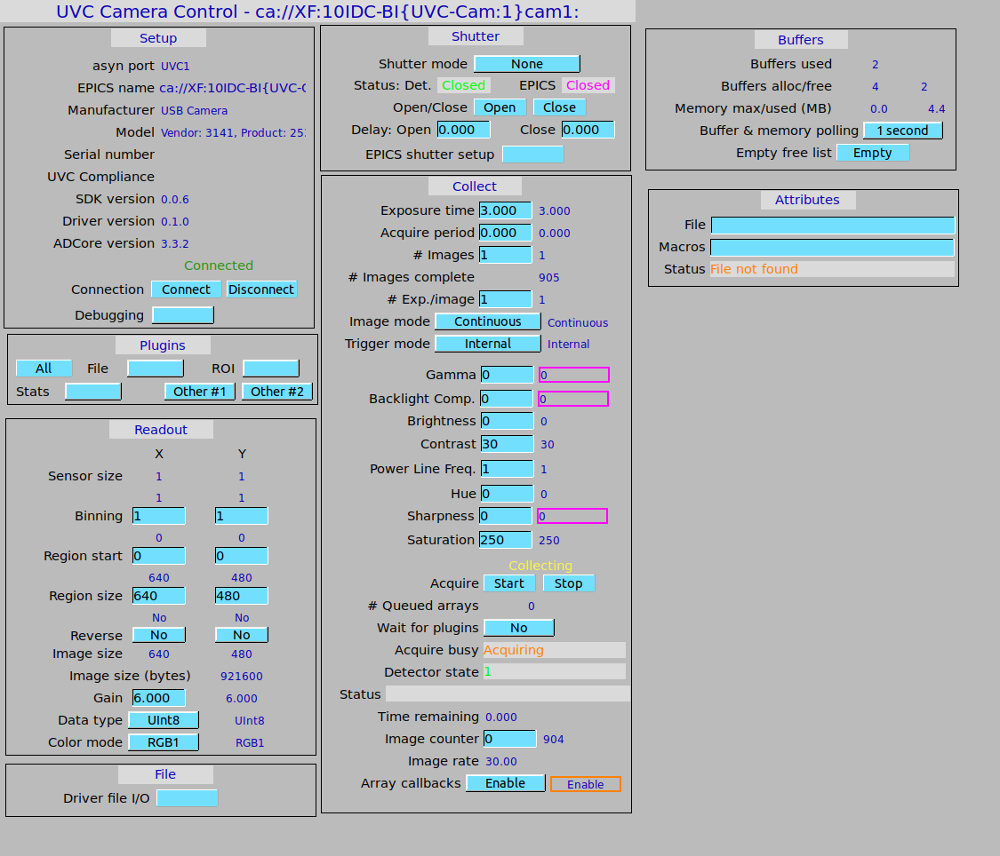

UVC, or USB Video Class is an open Video connection standard used for USB based cameras and webcams. Almost all consumer webcams support UVC, along with a large number of other consumer USB cameras of different form factors, ranging from pencil cameras to micro cameras. Some industrial cameras support the format as well. ADUVC is an area detector driver that adds support for UVC based cameras. It also includes some useful test programs to check if your UVC device is being recognized correctly.
Detailed installation instructions for the ADUVC driver can be seen in the README file. To install ADUVC, you must first install libuvc and its dependancies. The simplest way to do this is to run the provided bash script in the adUVCSupport directory of the repository. This installs libusub, libjpeg, and cmake, clones the libuvc repository on github, and then builds it using cmake. The dynamic library files resulting from the build are placed in the /usr/local directory (on Linux), and include files must be placed in adUVCSupport/include. From here you may compile the support programs or the driver itself by entering the appropriate directory (the top ADUVC dir. for the driver), and compiling by switching to root and typing 'make'. The driver is now installed.
Once the driver is installed, you may start the ioc by entering the IOC folder and running 'sudo ./st.cmd'. Sudo access is important because access to UVC devices is limited to users with root permissions. You may then integrate ADUVC into your area detector screen setup. Below is an image of the ADUVC base control screen. It extends the standard ADBase screen with UVC controls for various camera functionality, such as brightness, exposure, backlight compenstation, saturation, etc. The driver supports a variety of UVC formats, though the two that are used the most often are MJPEG and Uncompressed. Because acquisition modes are locked down in most UVC cameras, as of R1-2 there has been added a section to the screen that allows for selecting from up to the 7 most useful acquisition modes supported by the camera. If the camera has fewer than 7 modes, the remaining ones will show as Unused.
The ADUVC Base screen. Based on the ADBase screen with added controls specific to ADUVC.
libuvc now builds via the EPICS build systemFeatures Added
Fixes/Improvements
Features Added
Fixes/Improvement
Known Issues
libuvc relies on libusb-1.0, not libusb. Key detector features implemented:
Key fixes and improvements
Known Issues
Key detector features implemented:
Key fixes and improvements
Key detector features implemented:
Key fixes and improvements
Key detector features implemented:
Key fixes and improvements
Key detector features implemented:
Key Support Features Added
Limitations
To submit an issue or a pull request for ADUVC, please do so at the source fork on Github.